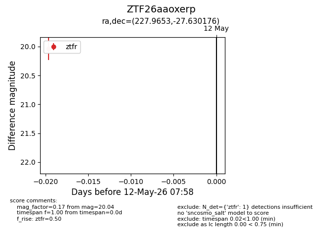
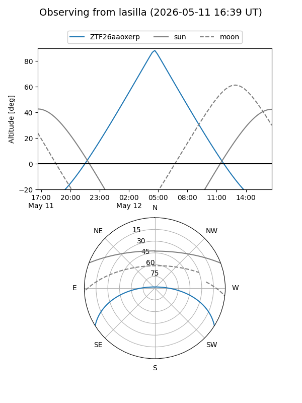
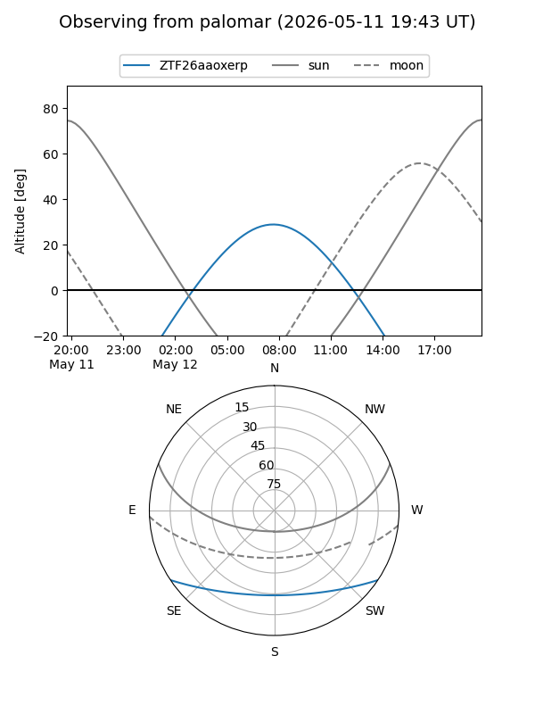

ZTF26aaoxerp
Target ZTF26aaoxerp at 2026-05-12 08:00
Aliases and brokers:
FINK: link
Lasair: link
ALeRCE: link
alt names
ZTF26aaoxerp (ztf,fink_ztf)
Coordinates:
equatorial (ra, dec) = 227.9653,-27.63018
equatorial (HMS+DMS) = 15:11:51.67,-27:37:48.63
galactic (l, b) = (337.3633,+25.69569)
Flags:
Photometry:
last ztfr=20.04
1 ztfr detections
Lightcurve

Visibility


Additional plots